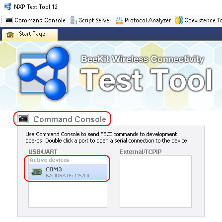
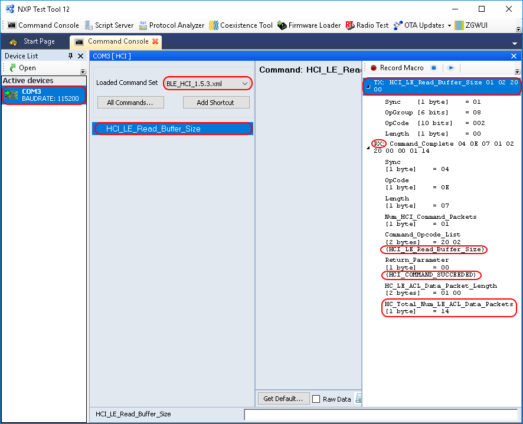

The Bluetooth LE HCI Black Box demo application is designed to be used via
serial interface. This can be achieved using the TEST Tool for Connectivity Products –
Command Console application as described below.
- Download the demo application to a supported board
- Connect the board to an USB port of the PC. The UASB COM port drivers
must be installed properly and a COM port corresponding to the board should be
available.
- Open the Test Tool application and connect to the serial port
corresponding to the board on which the Bluetooth LE HCI Black Box application runs.
The serial communication parameters are: baud rate 115200, 8N1
Figure 1. Test tool command console serial port selection

- Select the appropriate Test Tool HCI XML file from the drop-down list for the
release you are using and send some commands to the application.
Figure 2. HCI black box command example